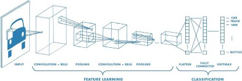

Artificial intelligence is advancing various industries, including healthcare and the pharmaceutical industry. According to Accenture data, key clinical health AI applications can potentially create $150 billion in annual savings for the United States healthcare sector by 2026.
The numbers show that the healthcare industry will heavily leverage the possibilities provided by machine learning. That’s why AI companies are getting involved in various activities in the treatment process, from diagnosis to therapy and drug development.
By applying convolutional neural networks in detecting diabetic retinopathy, deepsense.ai significantly improved the diagnostic process by speeding up and automating diabetic retinopathy screenings. The next step may be building a reinforcement learning agent that can be trained to run by controlling the muscles attached to the virtual skeleton. With that doctors can predict if a patient is able to walk, jump or run properly after the treatment. Furthermore, the work done during the research might be later used to design new, AI-powered leg prostheses.
Ensuring drug safety is one of the main challenges in the drug discovery process. Interpreting information of the known effects of drugs and predicting their side effects are complex tasks. Scientists and engineers from research institutions and pharmaceutical companies like Roche and Pfizer have been trying to use machine learning to get meaningful information from clinical data obtained in clinical trials. Interpretation of this data in the context of drug safety is an active area of research.-
Discovering (or planning) a new drug candidate involves many parameters, which makes this process slow, costly, and leading to failures at the end in some cases. In the last decades, we have witnessed a revolution in the computational area (hardware, software, large-scale computing, etc.), as well as an explosion in data generation (big data), which raises the need for more sophisticated algorithms to analyze this myriad of data. In this scenario, we can highlight the potentialities of artificial intelligence (AI) or computational intelligence (CI) as a powerful tool to analyze medicinal chemistry data. According to IEEE, computational intelligence involves the theory, the design, the application, and the development of biologically and linguistically motivated computational paradigms. In addition, CI encompasses three main methodologies: neural networks (NN), fuzzy systems, and evolutionary computation. In particular, artificial neural networks have been successfully applied in medicinal chemistry studies. A branch of the NN area that has attracted a lot of attention refers to deep learning (DL) due to its generalization power and ability to extract features from data. Therefore, in this mini-review we will briefly outline the present scope, advances, and challenges related to the use of DL in drug design and discovery, describing successful studies involving quantitative structure-activity relationships (QSAR) and virtual screening (VS) of databases containing thousands of compounds.
 Machine learning could help optimize therapy by integrating biomedical and clinical data with computational models, and can be used to build software to test drugs and combinatorial therapies. Some computational models and approaches which support the integration of clinical data are still under development but there are also a few very good examples of successful data integration in biology and medicine. Machine learning in medicine has recently made headlines. Google has developed a machine learning algorithm to help identify cancerous tumors on mammograms. Stanford is using a deep learning algorithm to identify skin cancer. A recent JAMA article reported the results of a deep machine-learning algorithm that was able to diagnose diabetic retinopathy in retinal images. It’s clear that machine learning puts another arrow in the quiver of clinical decision making. Still, machine learning lends itself to some processes better than others. Algorithms can provide immediate benefit to disciplines with processes that are reproducible or standardized. Also, those with large image datasets, such as radiology, cardiology, and pathology, are strong candidates. Machine learning can be trained to look at images, identify abnormalities, and point to areas that need attention, thus improving the accuracy of all these processes. Long term, machine learning will benefit the family practitioner or internist at the bedside. Machine learning can offer an objective opinion to improve efficiency, reliability, and accuracy. At Health Catalyst, we use a proprietary platform to analyze data, and loop it back in real time to physicians to aid in clinical decision making. At the same time a physician sees a patient and enters symptoms, data, and test results into the EMR, there’s machine learning behind the scenes looking at everything about that patient, and prompting the doctor with useful information for making a diagnosis, ordering a test, or suggesting a preventive screening. Long term, the capabilities will reach into all aspects of medicine as we get more useable, better integrated data. We’ll be able to incorporate bigger sets of data that can be analyzed and compared in real time to provide all kinds of information to the provider and patient. Machine learning in medicine has recently made headlines. Google has developed a machine learning algorithm to help identify cancerous tumors on mammograms. Stanford is using a deep learning algorithm to identify skin cancer. A recent JAMA article reported the results of a deep machine-learning algorithm that was able to diagnose diabetic retinopathy in retinal images. It’s clear that machine learning puts another arrow in the quiver of clinical decision making.
Still, machine learning lends itself to some processes better than others. Algorithms can provide immediate benefit to disciplines with processes that are reproducible or standardized. Also, those with large image datasets, such as radiology, cardiology, and pathology, are strong candidates. Machine learning can be trained to look at images, identify abnormalities, and point to areas that need attention, thus improving the accuracy of all these processes. Long term, machine learning will benefit the family practitioner or internist at the bedside. Machine learning can offer an objective opinion to improve efficiency, reliability, and accuracy.
At Health Catalyst, we use a proprietary platform to analyze data, and loop it back in real time to physicians to aid in clinical decision making. At the same time a physician sees a patient and enters symptoms, data, and test results into the EMR, there’s machine learning behind the scenes looking at everything about that patient, and prompting the doctor with useful information for making a diagnosis, ordering a test, or suggesting a preventive screening. Long term, the capabilities will reach into all aspects of medicine as we get more useable, better integrated data. We’ll be able to incorporate bigger sets of data that can be analyzed and compared in real time to provide all kinds of information to the provider and patient.
Machine learning in medicine has recently made headlines. Google has developed a machine learning algorithm to help identify cancerous tumors on mammograms. Stanford is using a deep learning algorithm to identify skin cancer. A recent JAMA article reported the results of a deep machine-learning algorithm that was able to diagnose diabetic retinopathy in retinal images. It’s clear that machine learning puts another arrow in the quiver of clinical decision making.
Still, machine learning lends itself to some processes better than others. Algorithms can provide immediate benefit to disciplines with processes that are reproducible or standardized. Also, those with large image datasets, such as radiology, cardiology, and pathology, are strong candidates. Machine learning can be trained to look at images, identify abnormalities, and point to areas that need attention, thus improving the accuracy of all these processes. Long term, machine learning will benefit the family practitioner or internist at the bedside. Machine learning can offer an objective opinion to improve efficiency, reliability, and accuracy.
At Health Catalyst, we use a proprietary platform to analyze data, and loop it back in real time to physicians to aid in clinical decision making. At the same time a physician sees a patient and enters symptoms, data, and test results into the EMR, there’s machine learning behind the scenes looking at everything about that patient, and prompting the doctor with useful information for making a diagnosis, ordering a test, or suggesting a preventive screening. Long term, the capabilities will reach into all aspects of medicine as we get more useable, better integrated data. We’ll be able to incorporate bigger sets of data that can be analyzed and compared in real time to provide all kinds of information to the provider and patient.